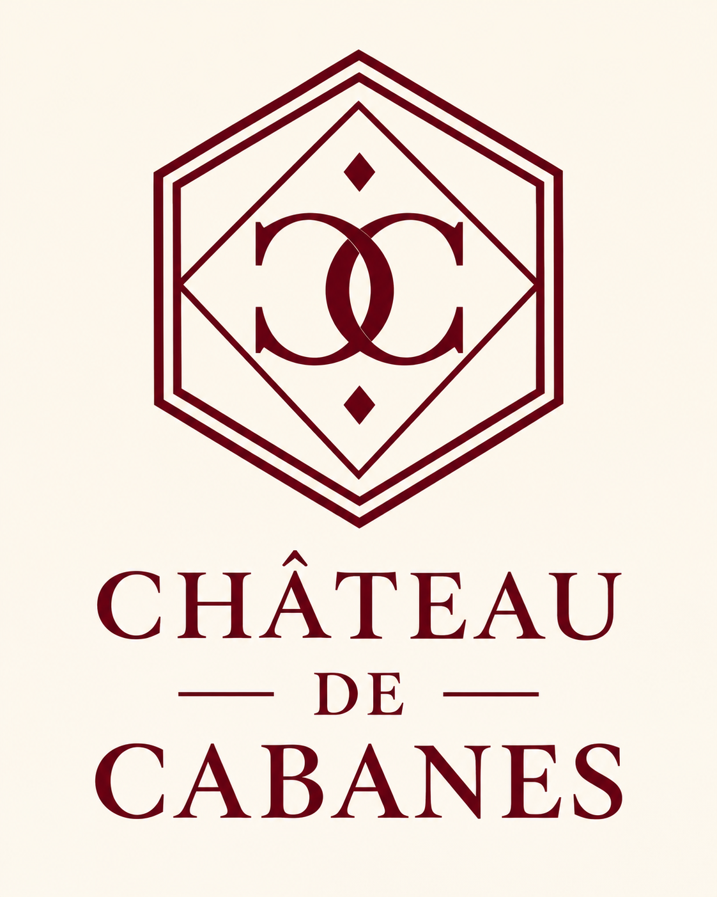
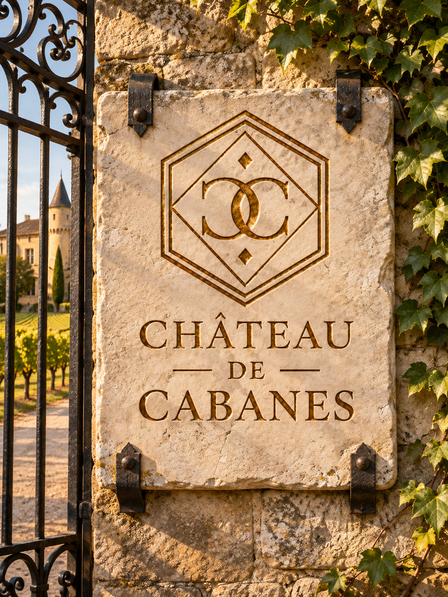

Identité visuelle · Étude de cas
Château de
Cabanes
Du détail architectural au blason.
William Rigoulet · Atelier WR
01 · Le trait d’union
Entrelacer
les deux C.
Je suis parti du C, signe historique du château, pour dessiner deux lettres orientées en sens opposés. Leur entrelacement transforme deux directions en un seul signe et exprime l’unité.
Les courbes épaisses et les ornements symétriques rappellent les lettres des manuscrits et les emblèmes héraldiques. Le monogramme reprend ainsi une signature ancienne dans une composition contemporaine.
02 · Le regard protecteur
Inscrire le signe
dans un losange.
J’ai repris la géométrie de certains carreaux du château ainsi que la forme de ses meurtrières. Le losange évoque à la fois un œil et un passage.
De l’ouverture qui permettait de veiller sur le lieu, j’ai retenu l’idée d’une protection discrète. Elle traduit l’attention portée aux enfants, à leur sécurité et aux besoins de chaque famille accueillie.
03 · Le cadre du blason
Donner au signe
une assise.
J’ai inscrit le losange dans un hexagone régulier. Ses six côtés égaux donnent un cadre stable au monogramme et équilibrent ses courbes.
La forme rappelle aussi les alvéoles, où chaque cellule s’emboîte dans un ensemble. Cette référence à la nature prolonge l’idée de coopération et prépare la répétition du blason en motif.
04 · L’équilibre des contrastes
Associer
le soleil et la lune.
Le soleil et la lune complètent le vocabulaire graphique. Leur opposition traduit ce que le lieu cherche à faire coexister, de la fête à la sérénité et du jeu au raffinement.
Ces petits signes prolongent l’idée d’équilibre portée par les deux C. Ils évoquent un lieu où l’on peut partager des moments en famille et trouver aussi du calme.
05 · Du signe au support
Décliner
l’identité.
Le blason s’associe au nom du château dans la signature principale. Répété bord à bord, l’hexagone devient un motif décoratif pensé pour le papier peint.
Gravée sur pierre, la signature rejoint l’architecture qui l’a inspirée. Le passage du dessin au relief conserve la lecture du double C, du losange et du cadre hexagonal.
